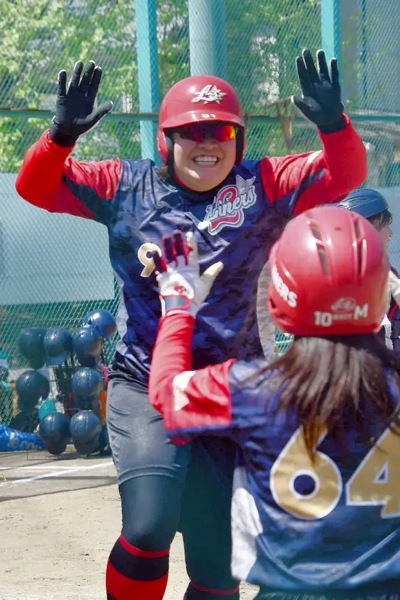
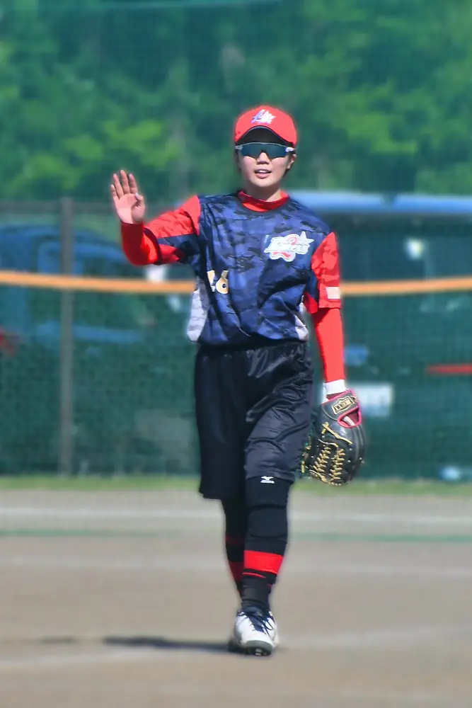
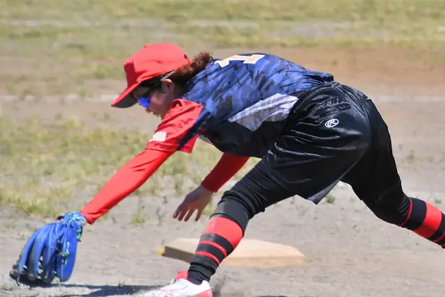
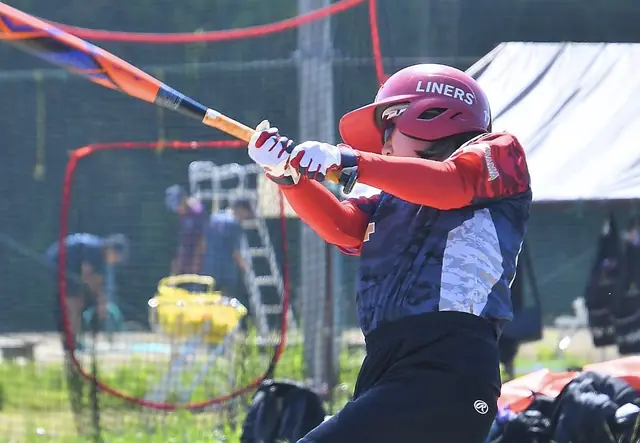
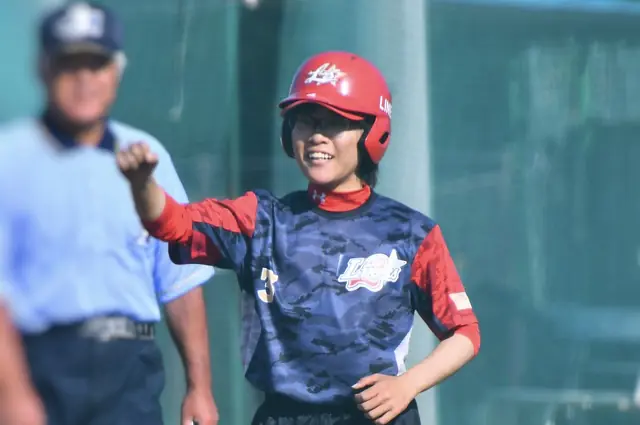

LADIES SOFTBALL
レディース
ソフトボールとは




ABOUT LADIES
楽しさも、真剣勝負も。
レディースソフトボールとは、日本ソフトボール協会が定める生涯スポーツとしての区分の一つで、15歳以上の女性を対象としたゴムボールを使用するソフトボールカテゴリーです。
レディースカテゴリーの概要
このカテゴリーは、日本ソフトボール協会（カテゴリーの説明・別タブで開きます）が定める生涯スポーツの区分です。
- 対象年齢・条件
- 15歳以上（同一都道府県内の者で構成されたチーム）。ただし、高等学校のチームに登録（高体連登録）されている選手は除外されます。
- 使用球
- ゴム製ボールを使用します（革製ボールを使う実業団や大学・競技種別とは異なります）。
大会への参加資格・年齢条件は、
各大会の最新の開催要項をご確認ください。
横浜市港北区のライナーズで、
ソフトボールを楽しみませんか？
ライナーズ（LINERS）は、神奈川県横浜市港北区を中心に活動するレディース／エルダーソフトボールチームです。
経験やブランクを問わず、見学・体験を歓迎しています。参加をご希望の方は、InstagramのDMからお気軽にお問い合わせください。
\ チームメンバー募集中！ /
お問い合わせはこちら！